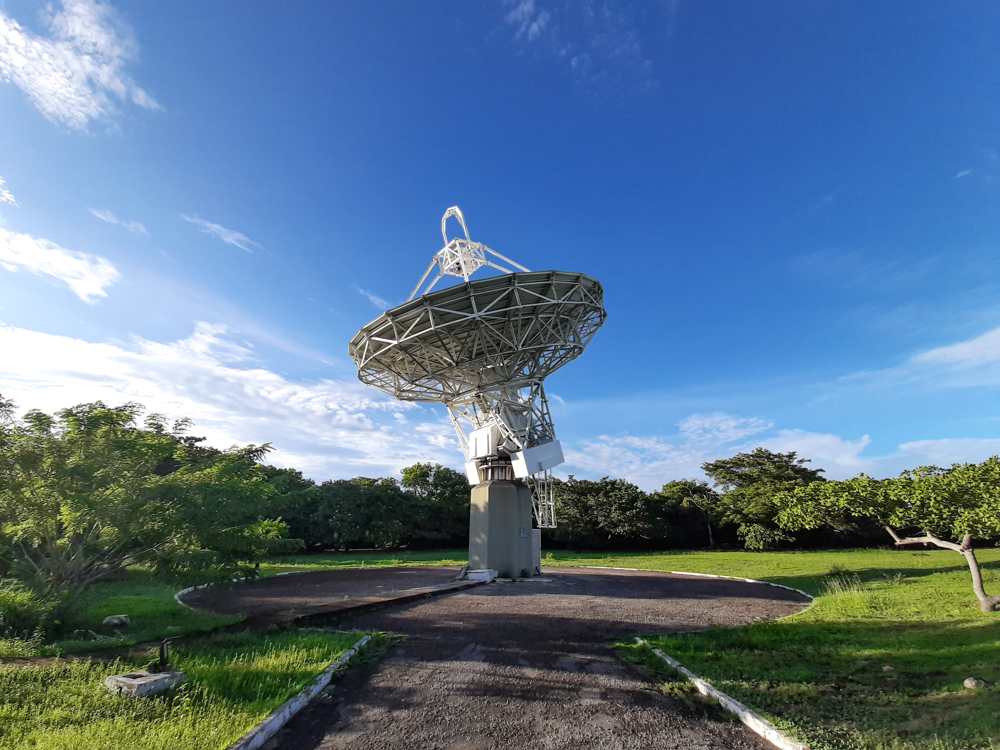
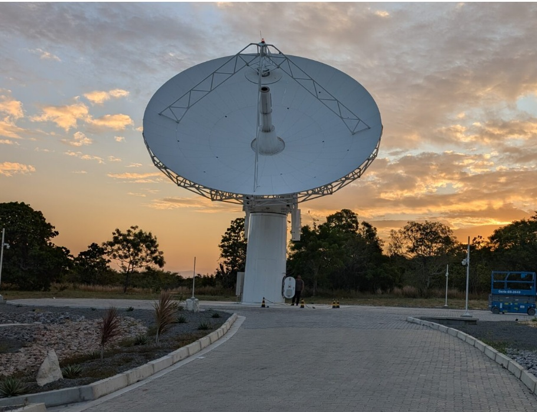

Onde eu trabalho: confiabilidade de sistemas científicos na rede global IVS-NASA.
$
ROEN
reader@renato: ~/roen
$cat roen.md
Legacy 14m - A histórica presença do VLBI em Fortaleza
Rádio Observatório Espacial do Nordeste · rede IVS-NASA

O Rádio Observatório foi instalado no início da década de 90 e é um dos observatórios mais importantes para a Rede mundial de VLBI.
Funciona como um marco que serve de referência para medidas geodésicas. A partir dessas medidas é possível, por exemplo, medir deslocamento de placas tectônicas, estudar sobre a órbita da Terra e sua posição no espaço. O que contribui para o funcionamento de equipamentos essenciais no nosso dia a dia como o GPS.
Em uma parceria entre a NASA, a AEB e o Instituto Mackenzie, o Observatório é mantido por uma equipe de profissionais dedicados que cuidam da manutenção do observatório, coleta de dados e envio aos correlatores internacionais, que tratam os dados de todas as estações ao redor do mundo para produzir as pesquisas da rede IVS.
$echo "fim da leitura"
$
Antena VGOS
reader@renato: ~/roen
$cat primeira-luz.md
Antena VGOS: a primeira luz em Fortaleza
22 de outubro de 2025 · um marco para o ROEN e a rede IVS-NASA

No dia 22 de outubro de 2025, o observatório de Fortaleza alcançou um
marco histórico: a Primeira Luz da nova antena VGOS. Pela primeira vez,
o mais novo rádio telescópio da rede da NASA "enxergou" o céu — e o resultado veio forte.
Na observação inaugural, Fortaleza e a antena de Westford — do MIT Haystack Observatory,
em Massachusetts — apontaram simultaneamente para o quasar 3C371 e
registraram uma observação de apenas 15 segundos em VLBI. O Haystack
correlacionou os fluxos de dados das duas antenas e detectou sinal forte nas
quatro bandas de frequência e nas duas polarizações: um resultado limpo, que
valida toda a cadeia de sinais do novo sistema.
A antena VGOS (VLBI Global Observing System) representa a próxima geração da
radioastronomia interferométrica. Projetada pela IVS e por organizações membros como a
NASA, ela combina tecnologia moderna e aprimorada: antenas menores e de
rotação mais rápida, além de uma cadeia de sinais de banda larga
capaz de coletar dados de melhor qualidade em cada sessão. Fortaleza é a mais nova
antena NASA VGOS, ao lado das unidades do Texas, Havaí, Maryland e Westford.
A escolha de Fortaleza não foi por acaso. O observatório já existia no local desde o
início da década de 90, o que facilitou a instalação e a operação da nova antena. E a
sua localização no Hemisfério Sul melhora a qualidade dos produtos
geodésicos da rede, distribuindo melhor as estações ao redor do globo.
Por trás da primeira luz está a cadeia de sinais — o coração do rádio
telescópio. Em essência, toda a eletrônica que detecta as ondas de rádio captadas pelo
prato de 12 metros e as converte em gravações digitais, prontas para
serem processadas e analisadas por cientistas. O MIT Haystack Observatory projetou e
construiu essa cadeia e foi parceiro fundamental para o marco alcançado.
O próximo passo é finalizar a instalação do CDMS (Cable Delay Measurement
System), desenvolvido pelo Haystack para determinar atrasos instrumentais nas
antenas VGOS. O sistema calibra atrasos de cabo, fase e amplitude do sinal, com medição
precisa de atraso em picossegundos, injeção de calibração de
5 MHz e um sinal de ruído comutado para correções no pós-processamento.
Este marco foi construído a muitas mãos: engenharia, instalação, treinamento e ciência —
e, claro, o time brasileiro em Fortaleza, que trabalhou incansavelmente para colocar o
sistema no ar. Do radiotelescópio que observa o céu ao GPS que usamos no dia a dia,
cada parte dessa rede faz a diferença.